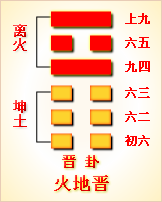

第三十五卦初六爻详解 第三十五卦六二爻详解 第三十五卦六三爻详解
第三十五卦九四爻详解 第三十五卦六五爻详解 第三十五卦上九爻详解
周易第三十五卦 晋 火地晋 离上坤下
晋：康侯用锡马蕃庶，昼日三接。
彖曰：晋，进也。明出地上，顺而丽乎大明，柔进而上行。是以康侯用锡马蕃庶，昼日三接也。
象曰：明出地上，晋;君子以自昭明德。
初六：晋如，摧如，贞吉。罔孚，裕无咎。象 曰：晋如，摧如;独行正也。裕无咎;未受命也。
六二：晋如，愁如，贞吉。受兹介福，于其王母。象曰：受之介福，以中正也。
六三：众允，悔亡。象曰：众允之，志上行也。
九四：晋如硕鼠，贞厉。象曰：硕鼠贞厉，位不当也。
六五：悔亡，失得勿恤，往吉无不利。象曰：失得勿恤，往有庆也。
上九：晋其角，维用伐邑，厉吉无咎，贞吝。象曰：维用伐邑，道未光也。
晋卦卦象，火地晋卦的象征意义
晋卦，本卦是异卦相叠，上卦为离，下卦为坤。离为日，为光明;坤为地。阳高悬，普照大地，大地卑顺，万物生长，光明磊落，柔进上行，喻事业蒸蒸日上。
晋卦位于大壮卦之后，《序卦》说：“物不可以终壮，故受之以晋。晋者，进也。”大壮卦有“止”意，现在则到了进展的时刻。《杂卦》说：“晋，昼也。”其象为“明出地上”，有如白日，适宜活动。
《象》中这样分析本卦：明出地上，晋;君子以自昭明德。这里指出：阳光从地面上升起，象征着前进和昌盛，也象征着发出自己的光和热。所以，君子应该充分显示自己的才华和美德，发挥自己的作用。晋卦给人的启示就是：求进发晋卦属于中上卦。《象》中这样评断此卦：锄地锄去苗里草，谁想财帛将人找，一锄锄出银子来，这个运气也算好。
此卦卦名为晋。《说文》中说：“晋，进也。日出，万物进。”也就是说万物随着太阳一起前进、生长的意思。俗话说“万物生长靠太阳”，说的就是这个意思。太阳出来了，植物开始向上生长，越来越高。如果将太阳比作为君王，则是众人受到君王的恩泽而有所作为的意思,当然君王对臣民最大的恩泽也就是加官进爵了,所以“晋”也有升官的含义。《序卦传》中说：“物不可以终壮，故受之以晋。晋者，进也。”就是说事物不可能总是停留在强壮的状态中，强壮后必有所前进、发展，所以大壮卦的后面是晋卦。
晋卦卦画：晋卦的卦画为两个阳交四个阴爻。
晋卦卦象：从卦象上进行分析，晋卦上卦为离为日为光明，下卦为坤为地为柔顺，所以太阳从东方的大地上升起来就是晋卦的卦象。旭日东升，正是晋升的大形象，这是每天人们都能看到的。而贤明的君王会对有功的臣民进行奖赏，所以臣民的加官进爵也是晋升的形象。
关键词：周易,晋卦,火地晋,离上坤下
晋卦：康侯用周成王赐予他的良种马来繁殖马匹，一天配种多次。
初六：进攻打垮敌人、占得吉兆。没有抢夺财物，没有灾祸。
六二：进攻迫降敌人，占得吉兆。获得这样的福祐，是受了祖母的庇护。
六三：万众进攻，没有悔恨。
九四：进攻时胆小如鼠，占得凶兆。
六五：没有悔恨，即使战败也不气馁。前进，吉利。没有什么不利。
上九：进攻敌人必须较量力量，可以考虑攻打敌方城邑。凶险，吉利，没有灾祸，占得险兆。
①晋是本卦的标题。晋的意思是前进，指作战中的进攻。全卦的内容主 要讲战争。“晋”字既与内容有关，又是卦中多见词，所以用作标题。
②康侯：指周武王的弟弟康叔封。锡：用作“赐”，意思是赐予。蕃庶：繁育，繁殖。
③昼日：终日，一整天。三接:指多次交配。
④摧：摧毁，打 垮。
⑤罔：无。孚：抓，抢夺。裕：这里指财物。
(6)愁：用作 “遒”，意思是迫使投降。
(7)兹：此。介：大。
(8)王母：祖母。
(9)允：用作“郓”，意思是进，这里指进攻。
(10)鼫(shi)鼠：这里用来 形容胆小如鼠。
(11)失得：失败，失利。恤:担忧，气馁。
(12)其：则。 角：较量。
(13)维：考虑。